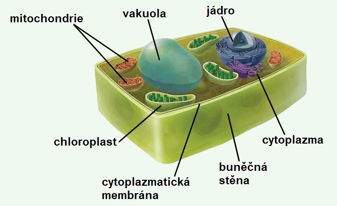

Nebuněčné organismy – viry
Jednotlivá částice viru schopná infikovat buňku se nazývá virion. Viriony jsou tělíska různého tvaru. Každý je složen z nukleové kyseliny a bílkovinného obalu – kapsidy. Složitější obalené viry mají i další obaly, tvořené bílkovinami a fosfolipidy. Komplex nukleové kyseliny a kapsidy se nazývá nukleokapsid.
Nukleová kyselina nese genetickou informaci viru. Je tvořena obvykle jednou molekulou nukleové kyseliny (DNA nebo RNA). Některé viry mají genom tvořený více molekulami nukleové kyseliny, např. virus chřipky má 8 segmentů RNA.
Kapsida chrání nukleovou kyselinu a zprostředkuje vazbu na hostitelskou buňku. Struktura je často geometricky pravidelná. Kapsida je složena z bílkovinných podjednotek kapsomer.
Virové bílkoviny jsou vždy specifické a mají schopnost aktivovat imunitní systém hostitele, aby začal tvořit protilátky.
Tvar virionu může být kulovitý, tyčinkovitý nebo vláknitý, mohou z nich vyčnívat hroty nebo výběžky. Bakteriofág (virus bakterií) má komplexní – složenou strukturu virionu, virus tabákové mozaiky je neobalený virus, retrovirus je obalený virus.
Buněčné organismy
Buněčná teorie a role buněk i virů v živých organismech
Podle buněčné teorie je buňka základní stavební a funkční jednotkou každého živého organismu, protože právě buňky zajišťují všechny základní životní procesy a představují nejmenší jednotku života schopnou samostatného fungování.
Všechny živé organismy jsou tvořeny buňkami. Podle počtu těchto buněk, ze kterých je jejich tělo složeno, rozlišujeme dva hlavní typy – jednobuněčné organismy, jejichž celé tělo tvoří jediná samostatná buňka schopná vykonávat všechny nezbytné životní funkce, a mnohobuněčné organismy, které se skládají z velkého množství buněk, jež spolu vzájemně spolupracují, specializují se na různé úkoly a společně tvoří složitě organizovaný celek.
Kromě těchto buněčných forem života existují i viry, které jsou považovány za nebuněčné organismy, protože neobsahují buněčnou strukturu a nedokážou samostatně vykonávat životní funkce. Tyto viry však dokážou přežívat a rozmnožovat se uvnitř živých buněk, kde využívají buněčné prostředí a jeho biologické mechanismy ke svému množení a šíření.
Přestože se organismy mohou výrazně lišit svou podobou i složitostí, všechny jejich buňky mají velmi podobné chemické složení, protože obsahují stejné základní stavební látky, jako jsou bílkoviny, lipidy, sacharidy a nukleové kyseliny.
V buňkách probíhají obdobné chemické reakce, které umožňují uvolňování a přeměnu energie, tvorbu nových látek a udržování vnitřního prostředí, přičemž jejich vnitřní struktura je rovněž do značné míry podobná – většina buněk obsahuje cytoplazmu, buněčnou membránu a genetickou informaci uloženou v DNA.
Nové buňky vznikají výhradně z buněk již existujících, takzvaných buněk mateřských, a to procesem buněčného dělení, díky čemuž je umožněna nepřetržitá kontinuita života a přenos genetické informace z generace na generaci.
Činnost celého živého organismu je pak výsledkem součinnosti jednotlivých buněk, jejich specializovaných funkcí a vzájemné komunikace, přičemž právě spolupráce mezi buňkami zajišťuje, že organismus jako celek může správně fungovat, růst, vyvíjet se a reagovat na podněty z okolního prostředí.
Historie výzkumu buněk
- 1837 – J.E. Purkyně
- Vyslovil pouze základy buněčné teorie.
- Domníval se, že buňky mohou vznikat de novo = sami od sebe (dnes víme, není úplně pravda)
- 1838-39 – Matthias Schleiden a Theodor Schwann
- Schleiden – botanik – zformuloval část teorie týkající se rostlinných buněk.
- Schwann – zoolog – doplnil buněčnou teorii o živočišné buňky
- Dohromady vytvořili buněčnou teorii.
- 1857 – Rudolf Virchow
- Potvrdil teorii.
- Přidal také poslední důležitý bod:
omnis cellua e cellua (každá buňka pouze z buňky). - Tzn. každá buňka může vzniknout pouze z buňky, nemůže se tedy stát – jak tvrdil Purkyně –, že buňka vznikne sama od sebe bez nějaké předchozí buňky.

Prokaryotické buňky
Nachází se v jednobuněčných organismech, jako jsou bakterie a archea.
Jádro je volně přítomné v cytoplazmě.
Eukaryotická buňka
Je evolučně mladší, složitější a zpravidla větší než buňka prokaryotická. Jsou dva způsoby dělení těchto buněk – mitózou a meiózou
Rozdělujeme tři typy eukaryotických buněk: rostlinná, živočišná, houbová. Základní rozdíl ve stavbě mezi buňkou rostlin a živočichů je ten, že živočišná nemá buněčnou stěnu. Buňka hub se z hlediska stavby v zásadě shoduje s rostlinou. Srovnánní těchto typů buněk je v tabulce níže.
Srovnání přítomnosti buněčných struktur eukaryotických a prokaryotických buněk
| Eukaryotické buňky | Prokaryotická buňka | |||
|---|---|---|---|---|
| Buněčná struktura | Rostlinná buňka | Živočišná buňka | Buňka hub | Bakterie |
| Buněčná stěna | Ano | Ne | Ano | Ano |
| Cytoplazmatická membrána | Ano | Ano | Ano | Ano |
| Cytoplazma | Ano | Ano | Ano | Ano |
| Cytoskelet („kostra") | Ano | Ano | Ano | Ne (většinou) |
| Jádro | Ano | Ano | Ano | Rozpuštěnná forma jádra (genetický materiál) |
| Jadérko | Ano | Ano | Ano | Ne |
| ER (endoplazmatické retikulum) | Ano | Ano | Ano | Ne |
| GA (Golgiho aparát) | Ano | Ano | Ano | Ne |
| Vakuoly (ohraničení nějaké látky) | Ano | Ne (vzácné) | Ano | Ne |
| Mitochondrie (energie) | Ano | Ano | Ano | Energetické reakce probíhájí na plazmatické membráně |
| Ribozomy | Ano | Ano | Ano | Ano |
| Plastidy (barviva,tuky....) | Ano | Ne | Ano (různé transformace, ale ne jako u rostlin) | Ne |
| Lyzozómy | Ne | Ano | Ano | Ne |
| Centriola | Ne | Ano | Ne (pouze někdy) | Ne |
| Plasmodesmy | Ano | Ne | Ne | Ne |
Rostlinná buňka


Živočišná buňka


Buňka hub

Doporučujeme se podívat na:
Jak dobře rozumíte tomuto tématu?
Na tuto otázku tedy neexistuje jednoznačná odpoveď na to, zda jsou živé, nebo neživé.
Poznámka: Jednotlivé odpovědi lze zobrazit po kliknutí na danou otázku.